Find the danger before the accident
Turning connected-car data into a map that shows road operators where accidents are likely to happen next.
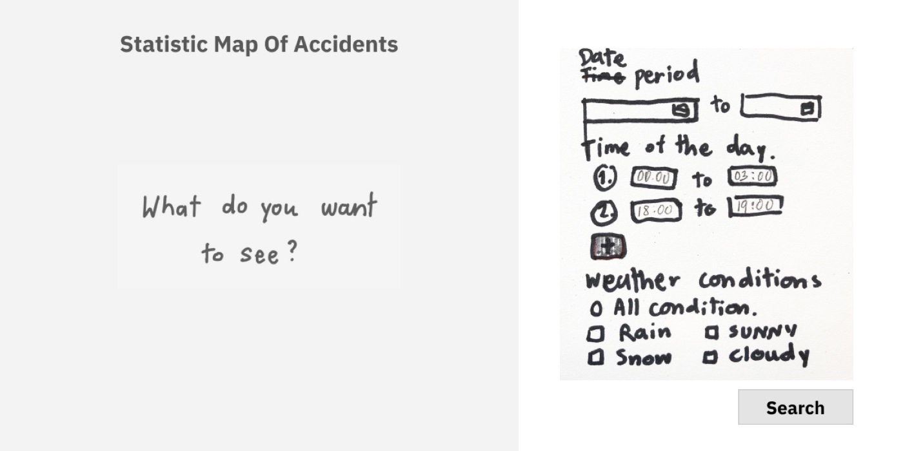
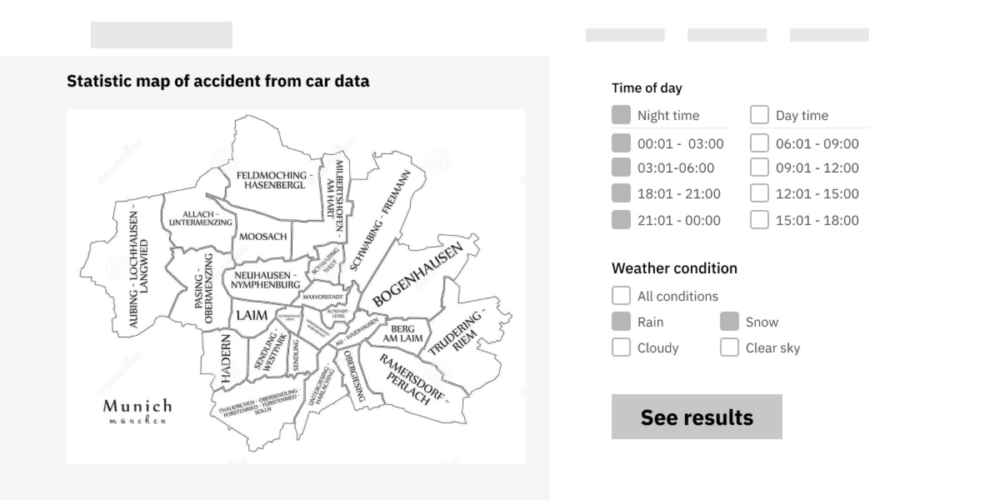
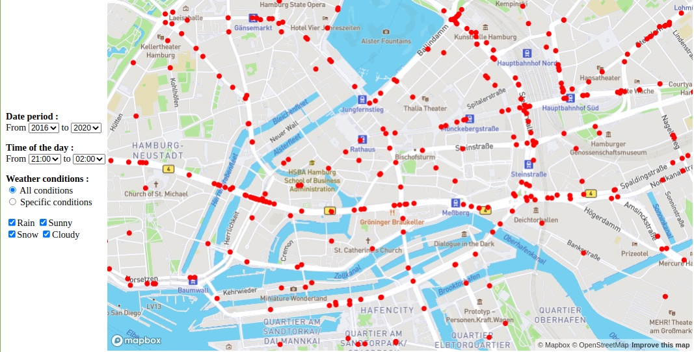
The problem
Road operators react to accidents after they happen, using police reports that arrive late and say little about near misses.
What I did
As the only designer, I took the team from paper sketches to a tested, hi-fi tool for finding and prioritising dangerous spots.
Outcome
A working prototype for Hamburg that combines accidents, near misses from car data, citizen reports and roadworks into danger zones.
Context
Modern cars notice danger long before an accident: hard braking, swerving, slippery roads.
BMW and AISIN wanted to know if this connected-car data could make roads safer. LSBG, the authority that runs Hamburg's roads, was the user we designed for.
Today, road maintenance officers mostly work from police accident records. By the time a spot shows up there, people have already been hurt.
Our idea: combine accidents with near misses from car sensors, so officers can see where the next accident is likely, and act first.
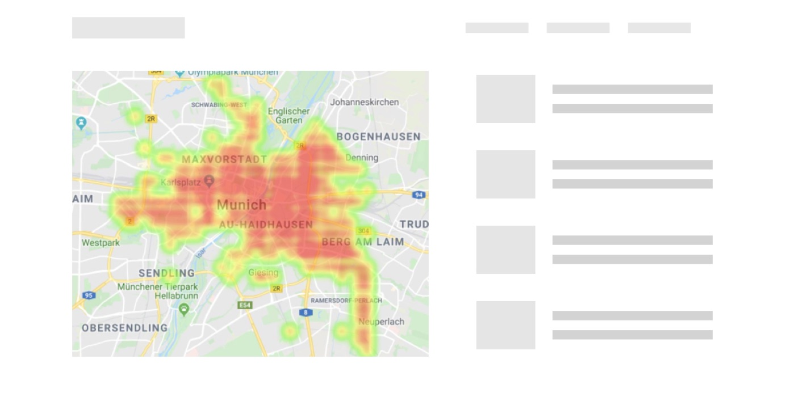
Sketch first, fast
With engineers and data scientists waiting for direction, I started on paper.
Quick sketches let the team agree on the flow in hours, not days: how an officer gets in, what they look for, and how they report a problem.
Paper also made it obvious the concept was unfinished, so people gave honest feedback instead of polishing details too early.
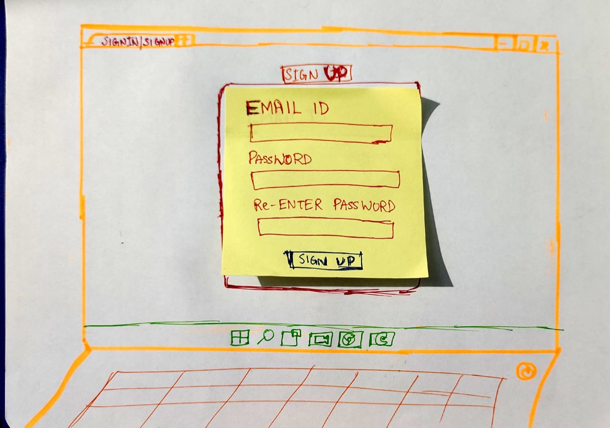
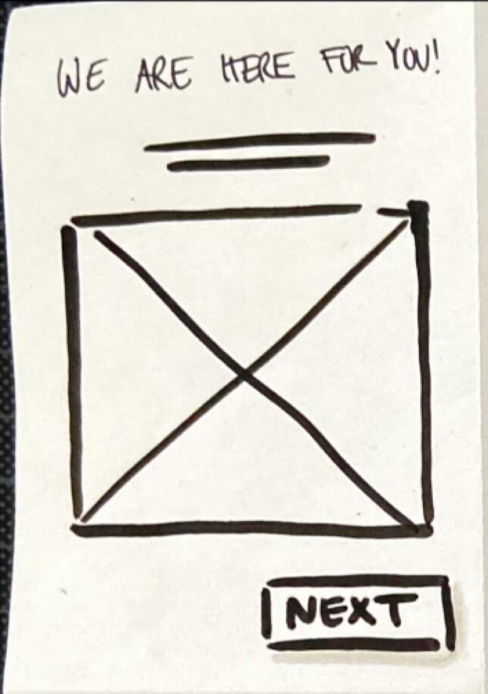
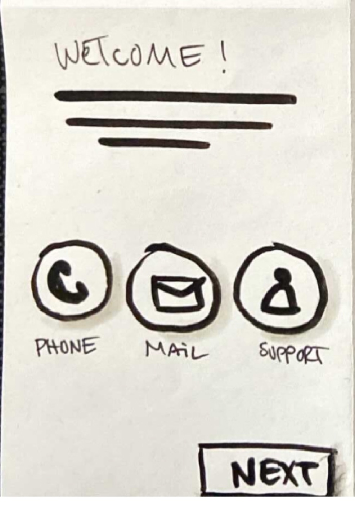
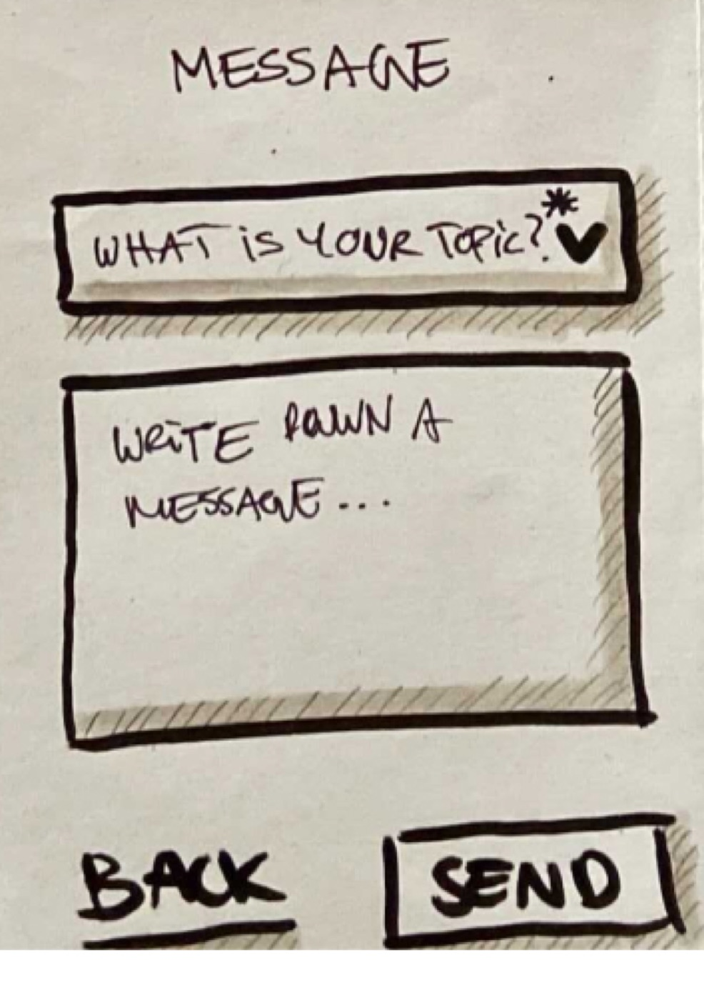
Test with a real scenario
Every test started the same way: "Imagine yourself being a road maintenance officer…"
Instead of asking people what they thought of screens, I gave them a job to do: find the accident-prone areas on the map and decide what to fix.
The wireframes were clickable inside the real app, so we could test the flow end to end while the data pipeline was still being built.
- Officers needed filters that match how they think: time of day, weather, light, road condition.
- A list of accidents wasn't enough. They wanted to know how dangerous a place is and whether it's getting worse.
- Reports had to lead to an action, not just a number.
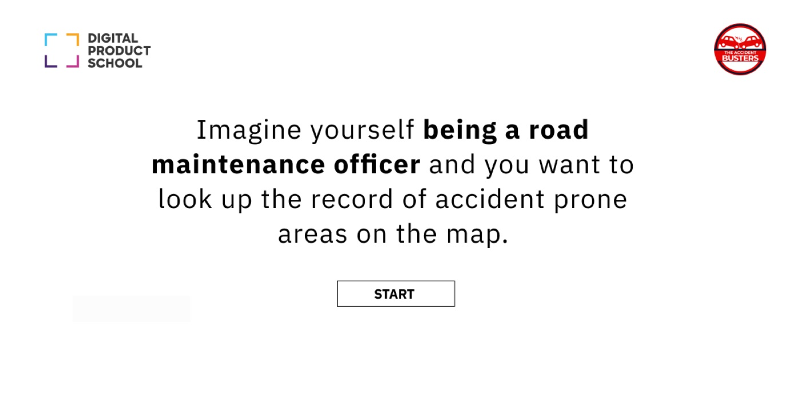
From report to recommendation
The "report" changed most between iterations.
- V1: a severity report per street: accidents, near misses, roadworks and a danger score.
- V2: a scannable table with a proposal, e.g. more street lights where most accidents happen at night.
- Final: a details page for each danger zone, with its danger level, recent accidents, how it changed over time, recent roadworks and recommendations.
The map itself became a live overview of danger zones, with a satellite view to see the actual junction.
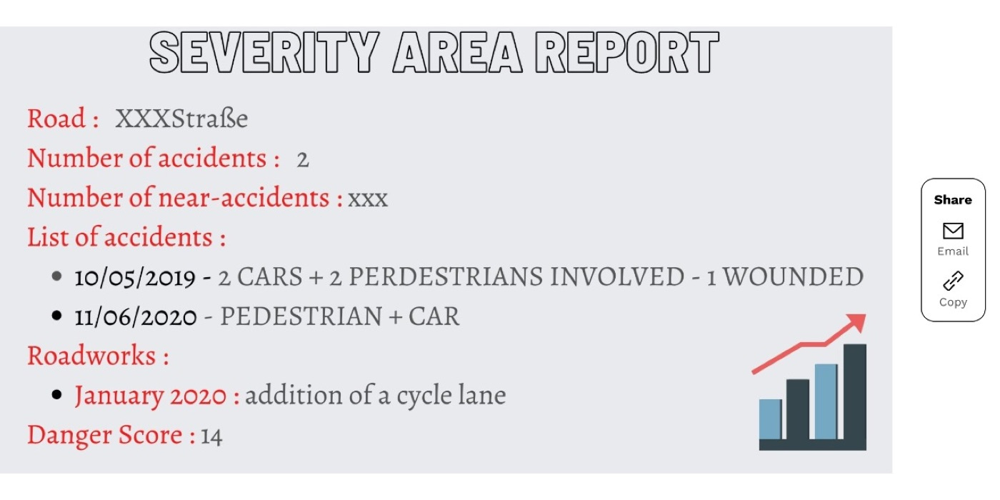
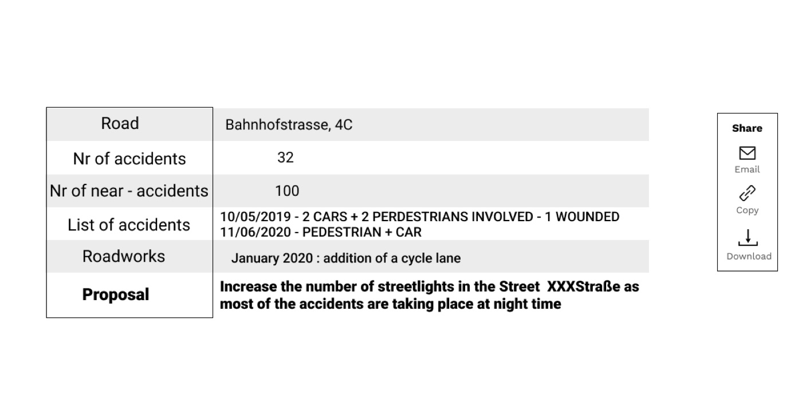
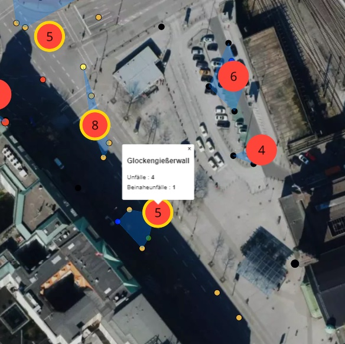
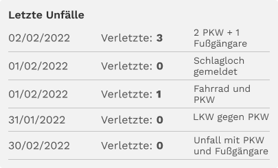
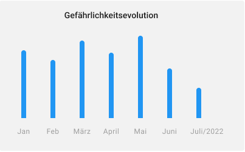
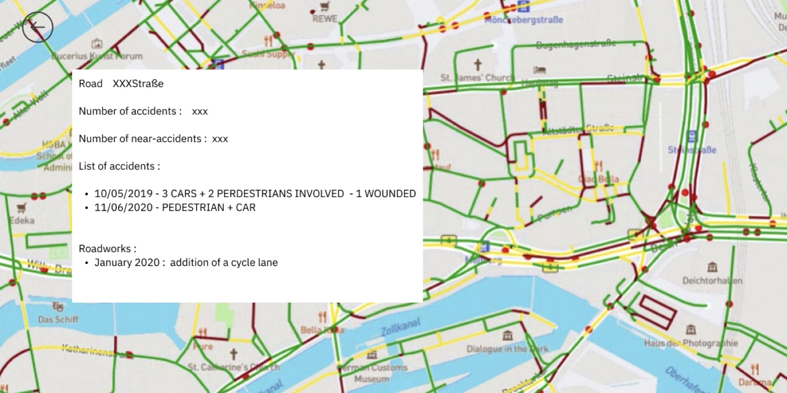
Outcome & learnings
Outcome
- A working prototype for Hamburg, in German, built on real data: police accident records, near misses detected from BMW connected-car data, citizen reports and roadworks.
- Danger zones that officers can filter, compare and drill into, ending in concrete recommendations.
- A design process the whole team could follow: sketch, test with a scenario, iterate weekly.
What I learned
- Data products need a "so what". A map full of dots impresses; a recommendation gets used.
- Scenario-based tests reveal what people need to do, not just what they like.
- As the only designer, my sketches became the team's shared language with engineers and data scientists.
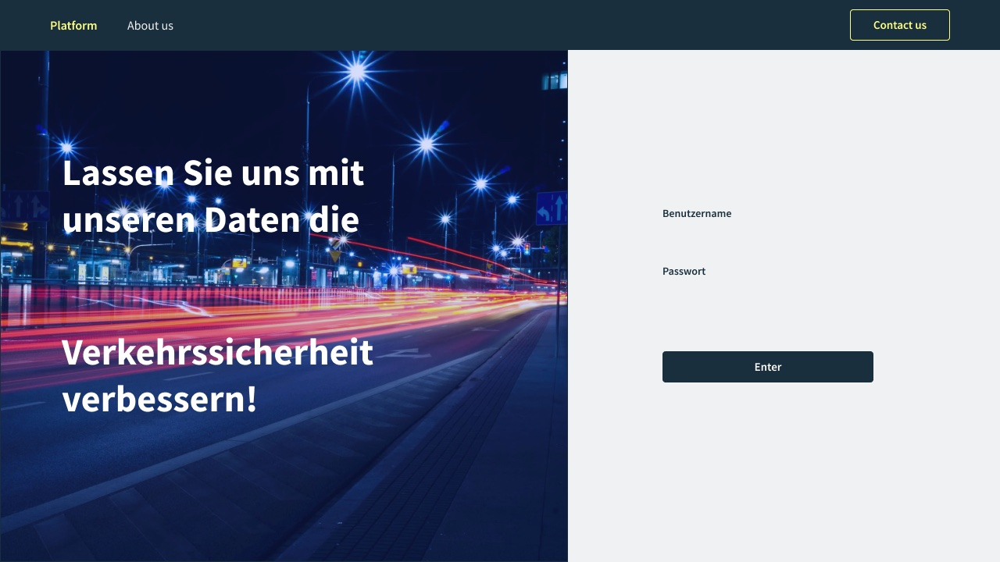